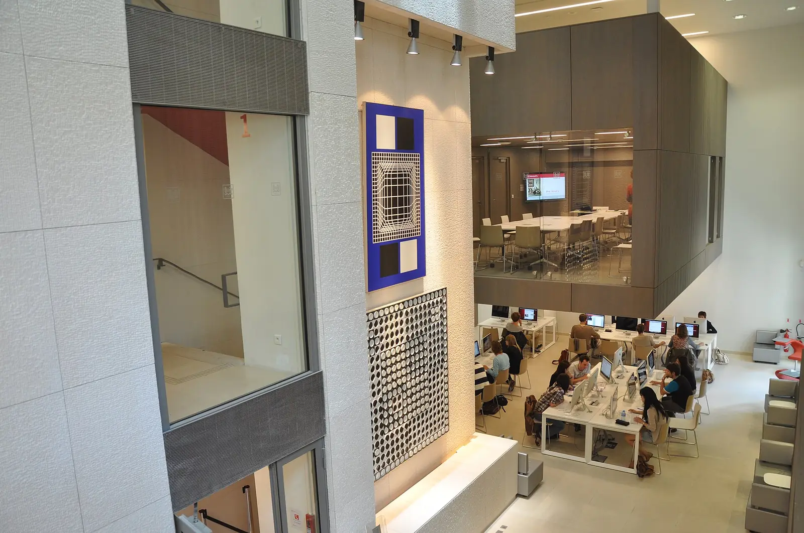
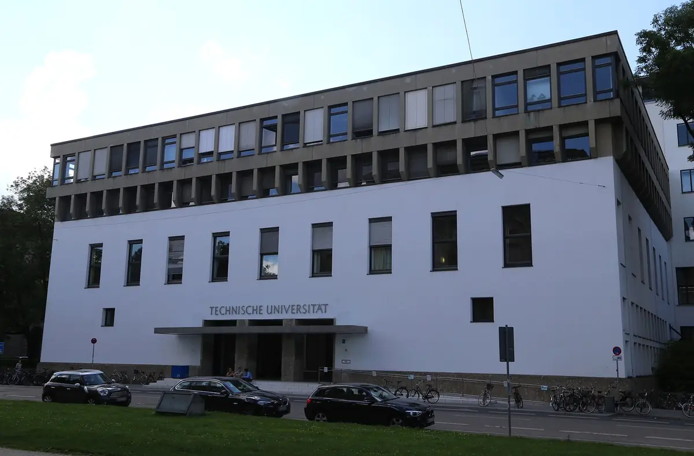

推動「可信賴 AI、治理、倫理與法規」人才需求。牛津 Law, Governance and AI、EMILDAI、劍橋 Ethics of AI 都屬這條線。
AI 加商管、金融科技、人機互動與生成式 AI 應用的學程增加，不一定要先有資工學士。
能把 AI 落到業務、合規與產品的人仍搶手；能講清楚 AI 法、風險管理與業務應用的跨領域畢業生較有優勢。
| 國家 | 畢業後居留 | 補充 |
|---|---|---|
| 英國 Graduate visa | 2027/1/1 起申請：18 個月 | 2026/12/31 前申請者為 2 年；申請費 £937，另加每年通常 £1,035 的 healthcare surcharge |
| 愛爾蘭 | Level 9 畢業生 Third Level Graduate Programme：最長 24 個月 | EMILDAI 主辦校 DCU 在愛爾蘭 |
| 德國 | 就業居留證通常最長 18 個月 | TUM、Hertie 等 |
| 法國 | 就業／創業居留證通常 1 年 | Sciences Po、Eiffel 路線 |
兩年、跨 2–3 國就讀。全額獎＝免學費＋每月 €1,400、最長 24 個月。
從政策、媒體、社會科學讀 AI。英國多為一年制、自費為主，搭配校內獎、Chevening、Eiffel。
科技與社會、AI × 商管；歡迎社科、人文、商管背景，部分有校內全額獎。
文理融合的資訊學，日語或英語授課。國立大學學費年額 535,800 日圓（標準額）。
EMAI（歐盟聯合 AI 碩士）2027–2029 屆不發 Erasmus Mundus 獎學金，只收自費生（每年 €9,000），也因此不符合教育部歐盟獎學金。
LCT（語言與溝通科技）已停招，目前沒有接續計畫。BDMA 已結束，由 DEAI 接續。EMAI、DEAI 偏資工，不適合當文組主打。
多數頂尖技術 AI 碩士要求數學與程式學分。文組優先看治理、商業應用與跨領域學程；想走技術向，可瞄準 2028 年，先補微積分、線性代數、機率統計與 Python。
兩年、多國聯合學位。標準全額獎學金：免學費＋每月 €1,400，最長 24 個月，並涵蓋保險。台灣學生可申；是否發放以各計畫當屆為準。

照片：Eva.arfwedson／Wikimedia Commons／CC BY-SA 3.0從政策、媒體、社會科學讀 AI，多數不要求資工先修。英國多為一年制、以自費為主；資金靠校內獎、Chevening（下一輪）或法國 Eiffel。
官方明說歡迎社會科學、人文、經濟或「任何學科」背景。CBS 有校內全額獎。

照片：Rufus46／Wikimedia Commons／CC BY-SA 3.0日文系可同時考慮日語授課（研究計畫書、筆記、口試）與英語學程（ITASIA、慶應 KMD、筑波英語考生特別選拔）。多數研究科要求出願前先取得希望教員的內諾，至少要先聯絡。
| 學程 | 為什麼值得看 | 2027 狀態 |
|---|---|---|
| 慶應 政策・媒體研究科（SFC） 入試頁↗ | 政策、媒體、社會與資訊的文理融合；研究計畫書＋面接，須先取得教員指導引受 | 已截止 第 II 期 2026/10/7；後期 待確認 |
| 一橋 社會資料科學研究科（SDS） 入試頁↗ | 社會科學＋資料科學，適合商管、社科；選拔看數量方法 | 已截止 外國人特別選考 7/27–8/3 |
| 東京科學大學 社會・人間科學 入試頁↗ | 科學技術社會（STS）、倫理、政策與傳播（舊東工大） | 已截止 主要出願 2026 年 6 月；看 9 月或 2028 年 4 月 |
| 滋賀大學 資料科學研究科 入試頁↗ | 日本較早的獨立 DS 研究科；須一定數量或資訊基礎；有成績優秀者校內獎 | 已截止 出願 11/2–6 |
| 大阪大學 人間科學研究科 入試頁↗ | 科技倫理、法律與社會課題（ELSI）相關教員；ELSI 中心本身不是獨立碩士學程 | 已截止 秋期 7/21–23、冬期 11/16–18 |
| 獎學金 | 給什麼 | 怎麼申／2027 時程 |
|---|---|---|
| Erasmus Mundus 全額獎 | 免學費＋每月 €1,400、最長 24 個月＋保險 | 跟各聯合碩士一起申請：Mundus Journalism 1/10、EMILDAI 1/17、AISS 2/2、MULTICOM 2/12 待確認；EMAI 2027 不發 |
| 法國 Eiffel | 碩士每月 €1,200；公立校國家文憑可免學費 | 學生不能自己申，須由法國大學提報。機構截止 2027/1/6，校內更早 |
| 教育部歐盟獎學金 | 115 年簡章：每年 US$16,000、至多 2 年、約 20 名 | 限 EMJM 備取或自費生；正取 EM 獎者、已有碩博士者不得申。116 年簡章未公告，例年約 5–6 月 |
| 英國 Chevening（台灣） | 一年制英國碩士 | 2027–28 已結束；下一輪例年約 8 月開放（2028 入學） |
| 獎學金 | 給什麼 | 怎麼申／2027 時程 |
|---|---|---|
| 德國 DAAD | 每月 €992＋保險、旅費、每年 €460；不含學費 | 官網 11/24 顯示 2027 年度無法申請，此輪很可能已過；看 2028 |
| 各校校內獎 | CBS 免學費＋每月 DKK 8,000；Hertie 全額或部分；TUM 費用豁免 | LSE、Sciences Po、愛丁堡也有，通常與入學同一截止 |
| 荷蘭 NL Scholarship | 多為第一年一次性 €5,000，不是全額 | 向參與大學申請 |
| 瑞典 SISGP | 全免學費＋每月 SEK 12,000 | 國籍清單不含台灣，不符合資格 |
| 匈牙利 Stipendium Hungaricum | 免學費；生活費僅約 €110／月 | 2027/28 是否開放台灣 待確認 |
| 其他 | Fulbright Taiwan 以赴美為主；教育部公費留學有指定領域與服務年限，看當年簡章 | |
台灣的大使館推薦由日本台灣交流協會辦理。2027 年度現地合格者已公告，台灣現地申請多半已結束。下一輪（多為 2028 入學）盯 2027 年春季公告。
現地採用（在台申請）：2027 年度已結束。
國內採用（已在日本、未滿 35 歲）：碩士月額 144,000 日圓（預定），學費通常以 535,800 日圓為上限；10/23 已截止。
私費正規留學生入學後經學校推薦。月額 48,000 日圓，原則 4 月至隔年 3 月一年，或 10 月至 3 月半年。不是出國前的全額獎。
扶輪米山記念：碩士月額 140,000 日圓（指定校推薦）；伊藤國際教育交流財團、平和中島財團等。2027 年 4 月採用多在 2026 年 10 月截止；2028 從 2027 夏天起盯。
例如滋賀大學資料科學研究科有成績優秀者校內獎。其他學校請在入學前後向學校查詢。
有指定領域與服務年限，須看當年簡章（scholarship.moe.gov.tw）。
所有照片皆取自 Wikimedia Commons，依各檔案標示之 CC BY／CC BY-SA／CC0／公有領域授權使用，經縮圖與裁切；點選檔名可看原始檔案頁與完整授權。照片僅示意學校或所在城市，不代表學程上課地點。
資料來源：各學程與獎學金官方網站（每張卡片附官網按鈕）、Erasmus Mundus 官方目錄（EACEA）、EU AI Factories（European Commission）、GOV.UK Graduate visa、教育部獎學金網、日本台灣交流協會、JASSO、文部科學省。
查證日期：2026 年 11 月 24 日（台北時間）。學費、截止與名額都可能變更，送件前請再對一次官網；標示「待確認」者尤其要再查。